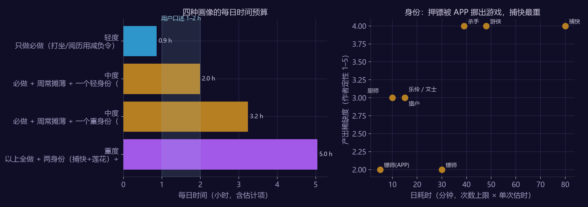
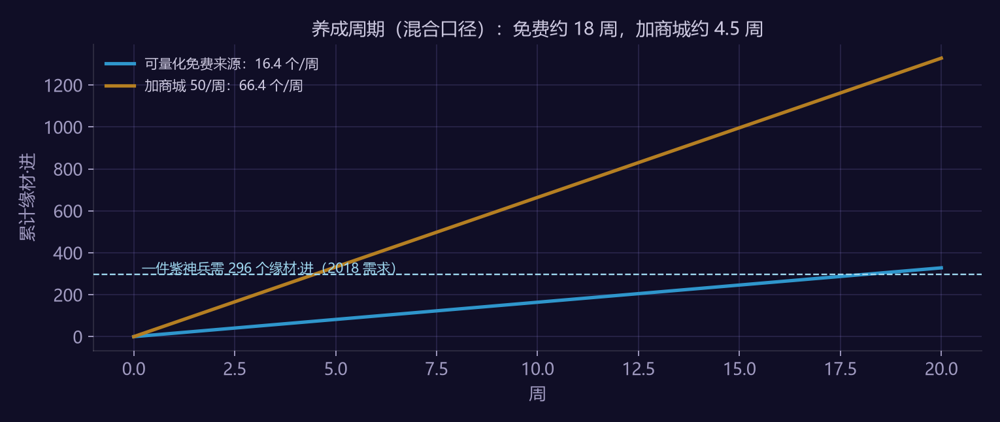

关于本拆解案的方法说明（请先读）
MMO 的"日常"是留存与付费的骨架，但公开资料里没有任何一条"完整日常要多少分钟"的官方口径。本文的处理：
| 层 | 内容 | 可信度 |
|---|---|---|
| 数据层 | 官方必做清单（2023-04）、各身份的每日次数上限（2017 / 2023 官方）、有据可查的单项时长（论剑场均 61 秒，2015；王府乱斗 7.5 分钟/局，2023；合璧 10 分钟/局，2022；缉拿"20 分钟足以"，2018 攻略）、神兵材料需求（2018）与周产出（2018 / 2025） | 逐条标年份 |
| 估计层 | 其余单项时长为作者估计（脚本里标"估"），三种玩家画像的组合 | 明标，换参数重跑 |
| 推导层 | 时间预算表、身份效率、打卡窗口计数、养成周期与付费替代率（§2–§5） | 我算出来的；结论只写区间与方向 |
| 设计层 | 日常减负改版建议（§6） | 基于 §2–§4 的方案 |
| 对照层 | 作者本人 460 小时中度玩家的口述 + 看数据前写下的五条直觉（§7） | 找漏洞用 |
数据时效：2023-04 清单是 155 级上限（2024-10）与 2025-11 周活跃 / 话本调整之前的口径，现版本可能已变；本文以它为基线。
1. 选题说明
天刀 2023 年官方给出了一份"每日必做 / 每日必买 / 每周勿忘 / 每周玩法"清单，身份系统从 7 种扩到 8 种再到 2026 年的第 9 种"市井"。把这份清单按时间、窗口数、产出稀缺度、可替代性四个维度拆开，能回答四个策划问题：一个中度玩家一天大约要花多久？哪些身份值得做？一天要打开多少个界面？付费买掉的是什么？——并给一个减负方案。
2. 时间预算：官方"必做"按估时约 1.1 小时（估计项砍半约 0.6 小时），"全做"按身份 2–4 小时
2023 官方每日必做九项，加每周内容摊到每日，再加一个身份：
| 项 | 分钟 | 依据 |
|---|---|---|
| 帮派委任前 10 次 | 15 | 估 |
| 势力日常 2 个 | 10 | 估 |
| 师妹排课 / 游历 | 3 | 估 |
| 别业收水果 / 茶话会 | 5 | 估 |
| 天波府 或 羽林宫 | 15 | 估 |
| 门派打坐（可存 3 日） | 5 | 估；减负令可一键 |
| 怪物阅历（可叠 7 日） | 10 | 估；减负令可一键 |
| 每日必买 + 商城免费抽（会员 2 项、非会员 1 项） | 2 | 估 |
| 游戏外礼包（助手 / 同人 SHOW） | 2 | 估，手机 |
| 每日必做小计 | 67 | 9/9 为估计 |
| 每周内容（话本 6 本、论剑 5 场、合璧 / 王府乱斗、宅邸、三个周活动、周购商店） | 328 / 周 → 47 / 日 | 论剑 61 秒/场、王府乱斗 7.5 分/局、合璧 10 分/局为官方口径；270 / 328 分钟为估计 |
| 画像 | 每日 |
|---|---|
| 轻度：只做必做，打坐 / 阅历用减负令 | 52 分 ≈ 0.9 h |
| 中度：必做 + 周常摊薄 + 轻身份（押镖走 APP） | 119 分 ≈ 2.0 h |
| 中度：必做 + 周常摊薄 + 重身份（游侠 48 分；捕快 20–80 分） | 162 分 ≈ 2.7 h |
| 重度：全做 + 两个重身份 + 帮会 / 论剑加练 60 分 | 261 分 ≈ 4.3 h |
敏感性：把全部估计项砍半，必做小计 34 分钟，中度重身份档 1.4 小时——画像之间的量级差来自身份和周常的取舍，不来自估计精度；但绝对小时数依赖估计。

- 官方"必做"是给"上班族"的最小闭环；官方同时卖"上班族减负令"一键完成打坐与阅历。最小闭环的时长是被当作产品参数在卖的——这是从"减负令存在、打坐可存 3 日、阅历可叠 7 日"推断的，不是官方表述。
- "全做"取决于身份。捕快的时长在公开资料里有歧义：2018 攻略说"带上合格飞机 20 分钟足以"，同文又称捕快"用时少无消耗回报高"——按每次 20 分钟读是 80 分钟/日，按四次总计读是 20 分钟/日。本文两种读法并列，重身份档用游侠（8 次 × 估 6 分钟）作代表。
- 我自己的口述是"中度、每天 1–2 小时、日常全做加身份"，模型给 2.0–2.7 小时。两种解释各占一半：我记忆里的"全做"没包含全部周常（八个商店、三个周活动我确实没每周做齐），或者估计项偏高。本文无法区分，两种都写。
如果这条错了会怎么看出来：若官方公布任一日常的实际时长与估计差 2 倍以上，对应画像要重算；若周活跃 2025-11 调整后必做项减少，基线整体下移。
3. 身份效率：次数上限是官方旋钮，单次时长是估计
每日次数上限是官方数据，单次时长除缉拿外为估计；产出稀缺度按 2023 官方产出描述定性打分（砭石 / 心法残页 / 神兵材料 = 4，修为 / 珍本 = 3，银两 / 碎银 = 2）：
| 身份 | 次数上限 | 日耗时（分） | 稀缺度 | 说明 |
|---|---|---|---|---|
| 捕快·缉拿 | 4 / 日 | 20–80（两种读法） | 4 | 官府奖励箱（砭石 / 心法残页 / 精铁）；2023 改为每轮 5 任务、陷阱限 3 分钟 |
| 游侠·怜花宝藏 | 8 / 日 | 48（估） | 4 | 5 人队、队长须游侠、找队难（2017）；每次耗 600 活力 |
| 杀手·悬赏令 | 13 / 日（2017） | 39（估） | 4 | 砭石 / 心法残页 / 洛阳铲 |
| 镖师·押镖（游戏内） | 10 / 日 | 30（估） | 2 | 银两 / 碎银 |
| 镖师·押镖（助手 APP） | 10 / 日 | 5（估） | 2 | 官方：APP 有押镖入口（2017、2023）；与游戏内是否同一配额不明 |
| 乐伶 / 文士 | — | 15（估） | 3 | 修为抄本、演奏 buff |
| 猎户 | 半小时刷猎物 | 15（估） | 3 | 皮毛 / 砭石 / 宠物 |
| 厨师 | — | 10（估） | 3 | 永久属性菜、buff |
- 押镖的时间成本有一部分被挪到了游戏外：官方在天刀助手 APP 里提供押镖入口，把一个产出最普通的身份变成了手机端的留存触点。2023 官方推荐新服身份就是厨师、镖师，两个最轻的。这是作者的解读，官方未这样表述。
- 捕快 / 游侠 / 杀手是"用时间换稀缺材料"的三个重身份，次数上限 4 / 8 / 13 是官方数；若单次 3–20 分钟的估计成立，日耗时落在 40–80 分钟。次数上限是官方手里的旋钮，这是本文的推论，官方意图无从证实。
- 2026 年新增的"市井"身份无功力属性、无技能点，重心从产出转向扮演（仍有营生与时装奖励），方向与 §6 的减负一致。
4. 打卡窗口：一天约 13 个，是 Gossip Harbor 的 2.3 倍
计数规则（与本作品集《Gossip Harbor 活动疲劳分析》一致）：一个"窗口" = 一个需要独立操作决策的入口；同一界面的不同页签记 1，手机 APP 各记 1，商城的"必买"与"免费抽"记 2。
| 类别 | 窗口数 | 明细 |
|---|---|---|
| 每日必做 | 11 | 帮派、势力 NPC、师妹、别业、副本入口、门派、野外、商城 ×2、手机 APP ×2 |
| 周常 | 9 → 摊到每日 1.3 | 话本、论剑、两个战场、宅邸、三个周活动、周购商店界面 |
| 身份 | 1 | |
| 中度玩家每日合计 | ≈ 13 | Gossip Harbor 需操作窗口日均 5.7 |
- 周购商店有八个（碎银 / 天魁币 / 胜负令 / 宋钱 / 伙伴 / 师妹 / 精选 / 风云令），本文按同一界面记 1，但它们各绑一种货币、每种货币又绑一类玩法——每新增一种货币基本对应新增一个商店入口。天刀的多货币是十年累积，不是一次设计出来的。
- MMO 的窗口数是合成游戏的两倍多，但两者的疲劳来源不同：合成游戏是"并行活动太多"，天刀是"常驻系统太多"——前者可以靠日历减负，后者只能靠"一键完成"类道具和 APP 外置来砍。
- 官方清单里"每日必买 + 免费抽"是纯打卡：不产玩法，只产"来过"。
5. 养成周期：免费约 18 周、加商城约 4.5 周（混合口径）
一件紫色神兵（三质料）需 240 质料 + 29,640 缘材·初 + 8,160 金碎银 + 296 缘材·进（2018 需求）。按能量化的周产出（2018 / 2025 混合口径；秘匣类随机产出未计）：
| 材料 | 需求 | 可量化免费周产 | 周期 |
|---|---|---|---|
| 缘材·初 | 29,640 | 话本 2,750 + 帮派礼盒 240 + 海战 360 + 财星商会 140 [+ 帮派商店 1,120，需 10,220 帮贡] | 6.4–8.5 周 |
| 缘材·进 | 296 | 修为商店 5（需月耗 1 亿修为）+ 神魄商店 ≈ 11.4（周活跃 700 档 500 神魄 + 势力日常 70 / 周，50 换 1） | 约 18 周 |
| 缘材·进（加商城） | 296 | + 商城每周 50 个（阶梯价，末 10 个 3,000 绑点/个） | 约 4.5 周 |

- 可量化口径下，免费玩家的瓶颈不在大宗材料，在稀有材料缘材·进；商城周限 50 个把等待从 18 周压到 4.5 周。付费买掉的是约 75% 的等待时间，不是产出上限——上限被周限锁死，付费玩家也要 4.5 周。前提是缘材·进不可交易（档案未见拍卖行条目）。
- 2018 需求 × 2025 产出是混合口径，中间七年神兵系统改过；本节的价值在"周限 + 商城 = 卖时间不卖上限"这个结构，不在 18 / 4.5 这两个数。
- 商城阶梯价末 10 个 3,000 绑点/个是"再多买"的劝退线，前 40 个价格未公开，不作估值。
如果这条错了会怎么看出来：若缘材·进可交易或有大宗免费来源（例如秘匣期望很高），免费周期会显著短于 18 周；本文只计入了可量化来源，漏项只会让结论更保守。
6. 设计动作：日常减负改版建议
基于 §2–§4 的诊断，给一版减负方案（数值为示意，可按 A/B 结果调）：
| 改动 | 内容 | 预期 | 风险与回滚 |
|---|---|---|---|
| 周购商店合并 | 八个商店合并为一个"周购"界面、一个"通用周购券"结算，各货币按固定汇率折算 | 周窗口 −7；每周节省估 8 分钟 | 货币汇率暴露原本隐藏的定价关系；先合并入口不合并货币 |
| 周常一键 | 话本、宅邸、三个周活动提供"一键领取基础奖励"（不含首通 / 排名奖励），消耗减负令 | 中度玩家每日 −20 分钟（估）；话本仍保留手动打的加成 | 在线时长下降影响社交密度；只对连续 7 日活跃的账号开放 |
| 最小闭环显式化 | 把"必做 9 项"做成一个面板，完成即给当日活跃满档；减负令直接嵌在面板 | 必做时长目标 ≤ 45 分钟（当前估 67） | 面板让"打卡感"更强；用进度环而不是清单呈现 |
| 身份配额外置 | 押镖、乐伶创作、厨师烹饪三个轻身份的每日配额全部可在 APP 完成，与游戏内共享配额 | 轻身份日耗时 → 0 游戏内分钟；APP 日活 ↑ | 游戏内身份场景变空；APP 完成只给基础产出、稀有产出仍要游戏内 |
- 验收指标：必做时长中位（埋点）、周购完成率、D7 / D30 留存、减负令购买率、ARPDAU——与《Gossip Harbor 活动疲劳分析》案的减负活动同一套指标，A/B 分桶验证。
- 取舍：减负必然减少在线时长，MMO 的社交密度依赖在线时长；本方案只砍"清单式"时间，不砍话本 / 战场 / 帮会这些"在场式"内容。
7. 对照：作者本人的 460 小时，和看数据前写下的直觉
7.1 个案对照
我是中度玩家（每天 1–2 小时，日常全做加身份，唐门 / 天香 / 五毒）。§2 已经写了模型与口述的分歧和两种解释。回想起来，我确实没有每周把八个商店逛完、也很少打齐三个周活动——玩家的"全做"是主观清单，官方的"必做"是产品清单，两者的差就是 §6 可以减的空间。
7.2 看数据前写下的直觉（analysis/data/tianya_priors.md）
| 直觉 | 数据 | 结论 |
|---|---|---|
| 拿满每日活跃度要 60–90 分钟，帮会 + 话本 + 剑荡占一半以上 | 必做估 67 分钟（估计值，无法独立检验）；话本是周常不是日常；活跃度体系 2023 已改为周活跃 | 无法用独立数据检验；构成错 |
| 一天要打开的窗口 ≥ 8 个，比 Gossip Harbor 多 | 约 13 个，是 5.7 的 2.3 倍 | 对，且低估 |
| 乐伶 / 文士时间效率最高，杀手 / 游侠效率最低但产出稀缺 | 效率最高的是押镖 APP（被外置）；乐伶 / 文士 / 厨师次之 | 半对：漏了 APP 外置这个变量 |
| 中度玩家刚好拿满活跃 + 一个身份，做不了第二个 | 模型中度 2.0–2.7 h，第二个重身份再加 40–50 分钟 | 以模型口径成立 |
| 付费能替代的必做时间不到 30% | 养成材料上付费买掉 75% 的等待；"在场式"内容（话本 / 帮会 / 战场）付费买不掉 | 半对：看你说的是哪种时间 |
五条里对一条、以模型口径成立一条、半对两条、一条无法检验。最大的盲点是"APP 外置"——我没把手机端当成时间预算的一部分，而官方早就把它当成了。
8. 可以直接拿走的设计规则
- 最小闭环时长是产品参数，要显式定义并单独卖减负。 天刀的证据是减负令与"可存 3 日 / 叠 7 日"的设计。
- 同名"身份"的时间成本可以差一个量级，用次数上限和单次时长两个旋钮分别调。 次数上限是官方数据（4 / 8 / 13 / 10），单次时长决定档位。
- 每新增一种货币基本对应新增一个商店入口。 新增货币前先问它会不会带来一个新窗口。
- 付费替代的是等待时间，不是产出上限。 用周限锁上限、用商城压等待，付费玩家和免费玩家到达同一终点，只是快慢不同。
- 减负砍"清单式"时间，不砍"在场式"时间。 MMO 的社交密度依赖在线，减负方案要区分这两种时间。
9. 未做与可证伪之处
- 单项时长 9/9 必做项为估计，公开资料无官方口径；结论只写区间与方向；缉拿 20 分钟的两种读法并列。
- 产出稀缺度是作者定性打分；窗口计数是本文定义的规则。
- 神兵材料需求是 2018 数据，周产出是 2018 / 2025 混合口径；秘匣类随机产出未计。
- 2023 清单可能已被 2025-11 的周活跃 / 话本调整覆盖。
- 个案为作者本人一人口述，且与模型有约一小时分歧，两种解释并列；不作群体结论。
10. 参考
- 天涯明月刀官方百晓集《升级宝典与必做日常》（2023-04）、各身份玩法篇（2023-03）、神兵篇（2025-07）、市井身份公告（2026-05）；逍遥客栈身份系统说明（2016-08）。
- 游民星空身份与日常整理（2017-09，转逍遥客栈）；17173 日常性价比（2018-02）；游民星空神兵材料（2018）。
- 全部数字由
analysis/tianya_daily_budget.py产出，输出见analysis/data/output_ty_daily.txt；数据源逐条索引见analysis/data/tianya_sources.md。